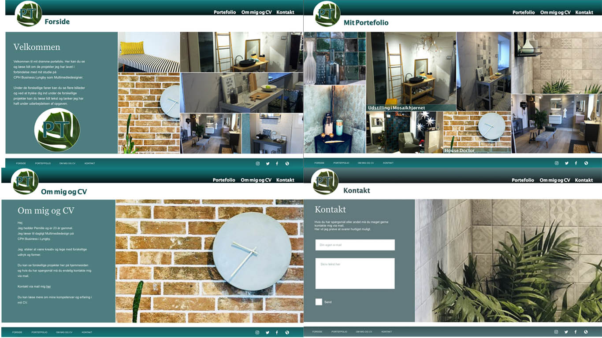

Første flowprojekt
I det afsluttende projekt i vores intro forløb blev vi præsenteret for Adobe programmet Adobe XD. Her kan man nemt og hurtigt skabe prototyper af websider, apps og andet.
Vi skulle prøve at skabe en skitse et oplæg til hvad vores eget portfolio kunne være.
Du kan se og prøve min prototype via linket her.
